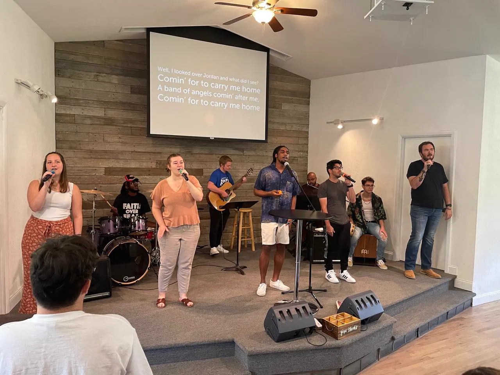
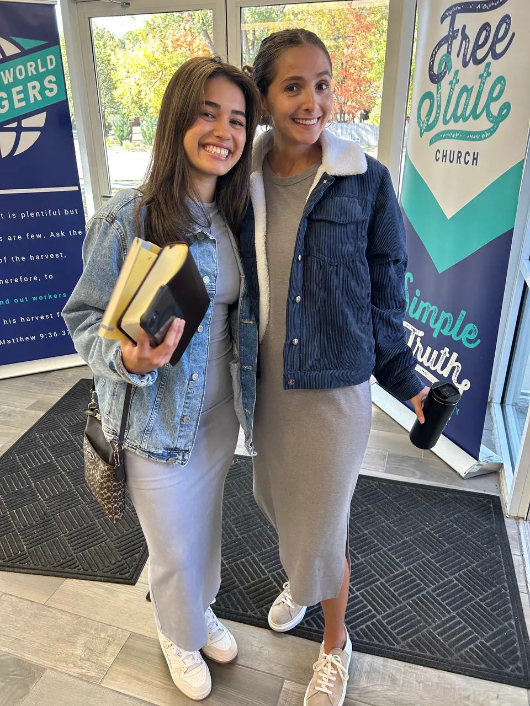
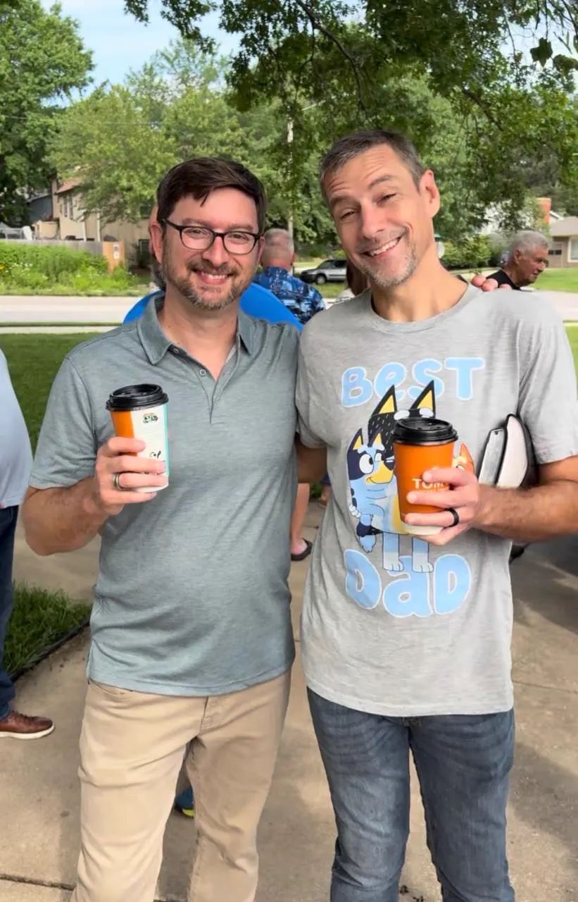
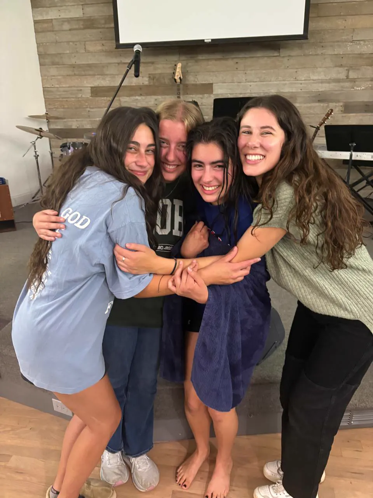
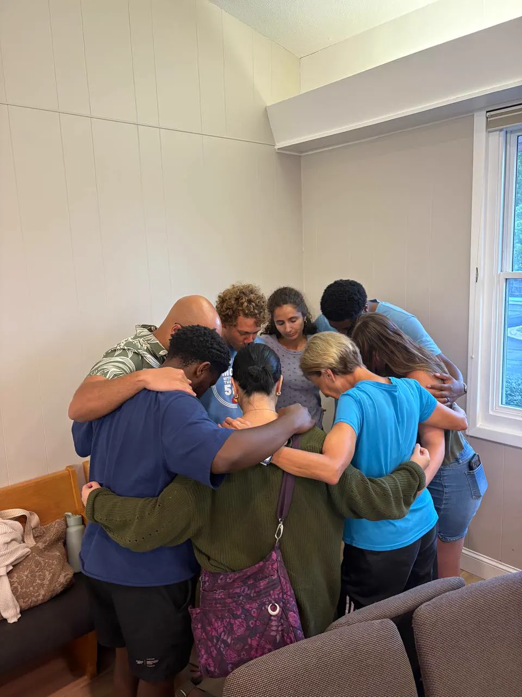
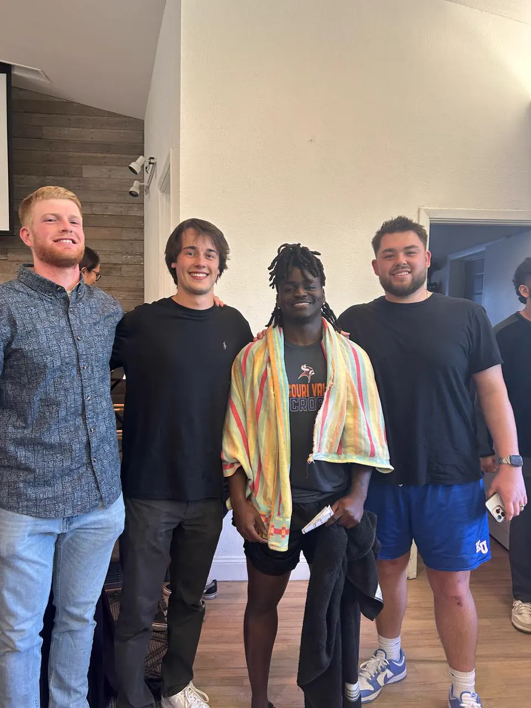
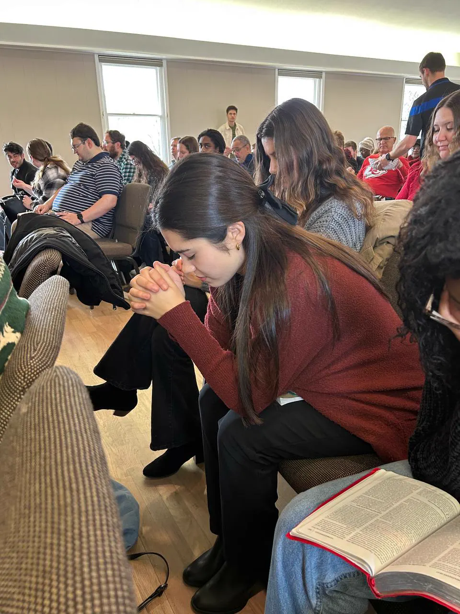
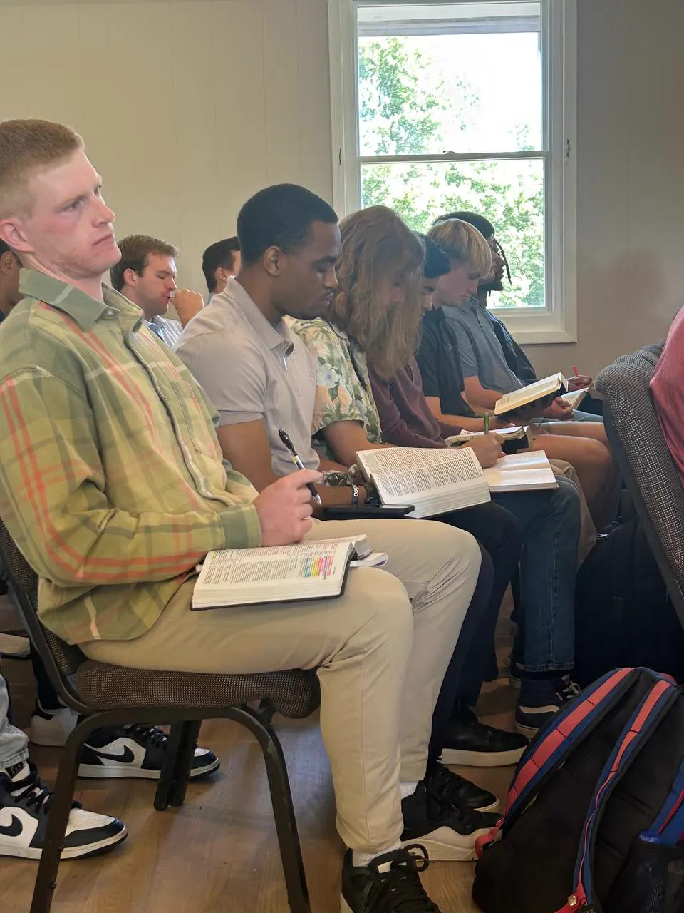

welcome to
free state.
No surprises. That’s the point.

The first ten minutes
Doors open at 9:45. Park anywhere — nobody has a reserved spot. You’ll walk in past the Free State banner, someone will say hi, point you to the coffee, and help you check the kids in if you want to (classes run from 3 months through 5th grade, and they’re optional).
Then grab a seat wherever you like. There’s no visitor section and nobody makes you stand up and introduce yourself.
The next hour or so
Worship starts at 10:00 — a few songs, sung by regular people who mean it. We share communion every single week, and guests are always invited, never expected. Then a message straight out of the Bible, aimed at real life. Middle schoolers stay with us through communion, then head to their own thing.
You’re out by 11:30. Most people stick around on the lawn a while anyway.
An offering basket goes by once. It’s for the people who call this church home — it is not for you, and nobody’s watching.
Love God. Love others. Change the world.
-
God is good — and mighty to save.
Not distant, not disappointed. Able to redeem even the parts of your story that feel unfixable.
-
Knowing God changes people.
It’s an actual relationship, not a rulebook — and it changes people from the inside out.
-
Grace, through faith in Jesus, at baptism.
Salvation is received, never earned. We’d love to show you where that comes from in the Bible.
-
Life to the full — starting now.
John 10:10 isn’t only about someday. Following Jesus is about this life too, not just the next one.
These are the people you’d be sitting with.

Coffee on the lawn after service 
Baptism night. Still dripping. 
Praying for each other 
A new brother, beach towel and all 
A quiet moment on a full Sunday
Whoever you are, there’s a room for you.
Simple Truth meets on campus at KU and Washburn, and family groups gather in living rooms from Kansas City to Topeka to Manhattan, Junction City, and Fort Riley.
There’s a seat for you.
Tell us your first name and we’ll have a name tag and a friendly face waiting at the door. That’s it — no follow-up campaign, no mailing list.

Start with a Bible study instead.
Some people would rather open the Bible with a friend or two before ever walking into a service. We love doing that — your place or a coffee shop, your questions, your pace, no obligation. Bring a pen if you like. Highlighters are apparently mandatory.
Set one upLawrence is home.
Free State Church is named for this place on purpose. Come find your seat in it.
Plan your SundayGet directions · (785) 813-1238